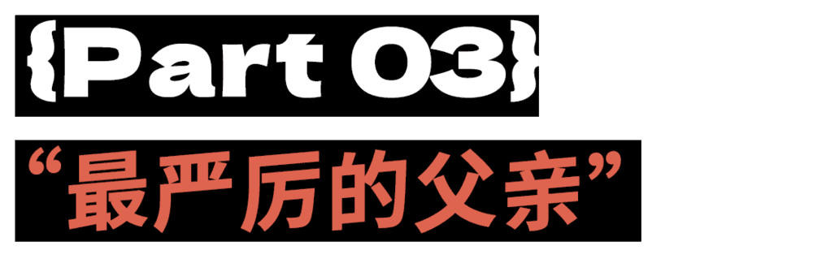

那个NG｜诡辩者户晨风的赛博死亡¶
诡辩者户晨风的赛博死亡（微信预览：悠悠的户晨风，“死于2025”）
2025年9月27日

出品 | 虎嗅青年文化组
作者 | 黄瓜汽水
编辑、题图 | 渣渣郡
本文首发于虎嗅年轻内容公众号“那個NG”（ID：huxiu4youth）。在这里，我们呈现当下年轻人的面貌、故事和态度。
事已至此，户晨风恐怕真的要“肉身成圣”了。
骂他的时候，大家叫他汉奸江户川晨风。 如今他被封禁，反而被一些人捧成了户先生。
“无论从哪回来，我一定去接他”
“快回来吧户子，你的切片我全都看完了”
“麦子熟了千万次，公开收入第一次”
至于如何评价他，只有时间能给出答案。

苹果vs安卓相对论，可能是2025年中文互联网传播度最广、争议最大的一次造梗运动。
安卓，adj.形容词，不值钱的，质量差的。
这一理论出自安卓手机最严格的审判官户晨风：
“你是典型的安卓逻辑，安卓人，安卓学历，安卓素质，安卓语法，安卓态度，安卓学校。”
此话一出，安卓便不再是一个由美国Google开发的操作系统， 而是中文语境下一切“次等的”事物。
甚至还可以用来形容一只猫。 花钱买的贵猫，是苹果猫；路边捡的猫，是安卓猫。
想要制裁户晨风，把他关进安卓监狱就行了。
充满争议的传奇耐封王户晨风，如今已经是第三次赛博坐牢了。
有人调侃他是被库克举报的。因为他的言论拉低了苹果用户群像，现在就差入侵苹果管理层了。
从美国纽约到日本东京，从法国巴黎到苏格兰格拉斯哥， 从北京三里屯到杭州西湖，全世界的苹果店都沦陷了， 一张神秘的东方面孔出现在地球各个角落。
比起库克，户晨风恐怕才是真正的苹果仙人。
为了纪念户晨风，网友甚至将iPhone17的星宇橙色改名为“沪橙风”。
互联网出现了大量户晨风专属手机壁纸（仅限苹果手机使用）， 户子目光如炬，背后是满坑满谷的“美国品牌”。
苹果安卓相对论诞生后，二者已经彻底脱离了操作系统的范畴， 上升到了可以囊括宇宙洪荒世间万物的程度。
如何定义一件事物是安卓还是苹果，其标准也很灵活。 比如普通安卓是安卓安卓，旗舰安卓是苹果安卓。 如果你就在美国谷歌开发安卓系统，那你就是苹果。
是否认可这套标准，因人而异。 但户晨风说过这样一句话： “苹果用户不会关心安卓，但安卓用户一定会每次都拿苹果出来对标。”
当某手机品牌在iPhone17发布后迅速将自家型号也改名为17， 回看户子这句话，便带着淡淡的喜感。
户晨风用一套简单粗暴的方法， 为大众规划了一套关于消费主义的“户式标准”。
超市就去山姆，手机就用苹果，电车就选特斯拉，油车就选丰田， 甚至连火鸡面的牌子也有户晨风严选。
由此衍生出一套户式《山姆规则怪谈》——
“没有山姆的城市，年轻人不要待。 山姆在任何一个地方开店都是要做调研的，你这个城市中产阶级多不多，有没有消费能力， 一个城市没有山姆你也不要去，没有发展前景。”
根据这套规则怪谈，户晨风的核心价值观可以总结为：
1、中医不科学
2、英语重要
3、苹果手机好
4、中餐不健康
5、油车首选丰田，电车首选特斯拉
6、喝热水会得咽喉癌，冷水不伤胃
7、喝粥不健康，中国人应该多吃肉蛋奶
8、白酒是所有糟粕文化里的巅峰之糟粕
9、没有山姆、没有苹果直营店、没有国际机场且直达美日澳新的城市，年轻人不要待
10、大部分家庭的年夜饭不如麦当劳
能够通过户晨风严选的苹果城市，全中国只有不到五座。 放眼全世界，也只有纽约、洛杉矶、伦敦、东京和新加坡算得上顶级苹果城市。
他经常挑战中国人的传统认知。 尤其是他“年夜饭不如麦当劳”的暴论，更是在全体传统中国人的心上开了一枪， 一部分网友愤怒斥责户子无父无母。
他还建议全中国家庭都应该扔掉木筷子，改用不锈钢筷子。 因为木筷子用久了根本洗不干净，缝隙处会产生黄曲霉素。 网友反驳：“不锈钢筷子烫嘴啊”， 户子反手接招：“烫嘴就对了，这是在提醒你不要吃烫的食物。”
户晨风的指导意见贯穿生活的各个层面， 他崇尚一种绝对的、现代主义的、全面西化的生活方式。
网友锐评，户子逆向钻研马哲， 精准地抓住了事物的所有次要矛盾，坚决地用孤立静止的眼光看问题。
被誉为“天下为私”的户子，坚定支持世间万物的私有化，甚至连国家高铁都应该私有化。 恐怕近百年来都没出现过比户子更支持私有化的人物了。
此番逆天言论一出，导致网友经常口出狂言：户子，我想私有化你。
在食品安全问题上，户晨风选择无条件认可国外品牌。
众所周知，户晨风是山姆“17块9欧盟标准牛奶”的坚定拥护者， 在无数次论辩中，山姆的牛奶和鸡蛋都是他的武器。
户晨风也是坚定的麦门信徒。 有一次，他和连麦网友激辩“兰州拉面和麦当劳哪个更胜一筹”。
他紧紧抓住“兰州拉面的牛肉没卖光，剩下的肉去哪了”这一个论点将对方怼得哑口无言。 毕竟麦当劳按照严格的SOP执行，没卖完的食物只会扔进垃圾桶。
在麦当劳打过工的网友现身说法支持户子：麦当劳全部使用的是标准化自动化设备。 炸鸡翅的锅不能炸鸡腿，炸鸡腿的锅不能炸薯条。 放凉的就扔了，不允许二次加热。
当然，作为消费者心里更清楚 “出门在外要想不拉肚子，最保险的办法就是吃肯德基和麦当劳。”
高中文凭、底层出身的户晨风，对中国绝大多数普通家庭现状有一套独特的剖析。
他建议所有小城市普通家庭出身的孩子走出去，千万别回老家， 说白了还是那套老话，家贫走四方。
“如果你爹妈在小地方是很普通的人，跟父母保持距离， 你父母什么都提供不了，只能提供苦难，父母能给你出什么主意？他自己都混不好。”
“你任何时候回老家，都会成为你父母的样子。 普通父母的最大问题是认识不到自己的普通，特别喜欢指导子女的生活。”
他的言论甚至尝试瓦解小农经济下形成的宗族亲缘关系。
一切亲戚之间的关系矛盾，都是贫穷在作祟， 因为人人都怕自己吃亏，除非这个家族里有一个宁愿吃亏的人。
只有这个家族里出现绝对的强人能人的时候，家庭关系才能保持表面的繁荣。 毕竟富在深山有远亲，穷在深山无人问。
有意思的是，在户晨风被封禁后， 网友开始替他辩经，大家好像都忘了曾经骂他狗汉奸的日子。
峰哥曾经锐评，“其实户子说的话，90%都是常识而已”。
许多人也回过味来，在一个人预算有限的情况下， 选择特斯拉、苹果、山姆、麦当劳，似乎真的是一种稳妥的选择。 甚至在一则特斯拉车祸后损伤很小的视频下方，也挤满了祭奠户圣的路人。
“到了山姆才发现酱油是可以没有呈味核苷酸二钠的。”
“户子说的东西不全对，但80%是对的。”
有人说查理·柯克是美国的户晨风，擅长诡辩， 经常和学生唇枪舌剑、魔法对轰，只不过查理比户子有文化多了。
幽默的是，查理·柯克和户晨风，一个物理死亡，一个赛博毁灭。

户晨风走了之后，他的音容笑貌散落在互联网世界的零星切片里。
相信很多人都对他的“户式拷打”印象深刻。 毕竟在科技发达的时代，已经很久没见过如此直白粗鲁的“古法开盒”了。
什么手机，什么学历？
多大岁数，你爹妈干什么的，两个人加起来一个月赚多少？
我对你没有恶意啊，没事儿不着急啊。
你的苦日子还在后头呢。
每当连线到了信号不好的网友，户子就会暴起斥责。 一旦有网友刷了价值不菲的礼物，户子会上演光速变脸， 从座位上弹射起来，感谢对面刷来的真金白银。
嬉笑怒骂之间，既有了节目效果，又获得了人民币。
快说，说事儿。
你那边有回声。
你在耽误直播间各位总的时间。
你到底想表达什么？
哎呀呀呀，感谢我xx总送的20个提督！
目前看来，户晨风最严重的恶行，就是在直播间执行了严格的人群划分制度。
别墅、留学学历、苹果电子产品、奢侈品、直播间刷礼物——只要有钱，就是苹果人。
在他的淘宝店里，可以下单价格从两千元到两万元不等的祝福视频。
得益于各位总的下单支持，我们有机会观赏到位于全球各地的“户式祝福广播体操”。
“哎呀呀呀呀，感谢我x总，竟然下单了一个2000块钱的祝福！ 太性情了，太通透了！ 祝我x总用苹果手机，住苹果小区，开苹果汽车，购买力越来越苹果！”
甚至连影视飓风的李四维也定制了一个户式祝福， 一度被网友怀疑是在给公司洗钱，可以入选“影视飓风买过的最没用的东西系列”。
户晨风之所以引起巨大的关注， 除了造梗以外，还在于他能让普通人看到想象之外的世界。
一看到1600平米的苹果别墅，户子表情逐渐谄媚， 面对真有实力的纯血富二代，户子连最基本的“打断技能”都不敢启动， 只能咬牙切齿地送上一段真诚卑微的祝福。
户子极其擅长给富哥富姐们提供情绪价值，而富哥富姐们也很吃这一套： “这是真有实力的，网络也流畅，声音也清晰，这一看就是苹果别墅。”
牙尖嘴利的户子，到了苹果人面前也只得作揖鞠躬，满嘴甜得流油。
毕竟苹果人的人生，是别墅里的私人影院和私人健身房， 家里空旷到走路都有回声，雇一个管家和三个阿姨都打扫不过来。 是在纽约曼哈顿市中心，租下一年租金40万人民币的顶级苹果公寓， 一袋苹果狗粮，顶得上普通人一个月的伙食费。
爹妈使劲藏，孩子使劲炫。 只要一问起父母的工作，他们的统一口径都是“不方便说”。
除了误闯天家，在户子的直播间里， 还能看到更多听起来像剧本演员，实际上真实荒诞的底层人。
他就像一根洛阳铲，通过连麦让大众感受到了当代社会的复杂肌理。

户晨风的标签里，人们给他最有意思的评价是这几个：
全网对“3d人群”最有耐心的主播、大专生最严厉的父亲、电子厂口音终极辨认者。
说实话，户子赚的这点钱，都不够他看心理医生的。 换成我坐在他的位置，听十分钟就要得抑郁症了。
第一个发明“电子厂口音”的人绝对是个天才， 户子的直播间里凑齐了全国大专学历及以下的神奇宝贝。 峰哥总结，在户晨风直播间对线的，基本上都是傻X。
网友总结了一套《户晨风直播间第一定律》， 即户晨风和连麦的人之间，必须有且只有一个人类， 当对方是人类时，户晨风自动退化为伪人； 当对方是伪人时，户晨风原地进化为人类。

户子最有魄力的技能，就是敢于面对粪坑，和油盐不进的顽石对话。
看过《户子劝学篇》的人，都被户子的精神打动了。
几个大专生嘻嘻哈哈地和户子连麦，张嘴闭嘴就是问候父母。 户子淡淡地回答：“你们宿舍毕业之后，四个人送外卖，三个人送快递，还有一个人在家躺着。 你们有学历吗，有背景吗，毕业之后谁帮你？ 你们家有矿的话你就不会上大专。 你们就玩吧，你们的前程是光明的。”
对面的回应是：“包的，我们未来肯定光明。”
或许户子被骂多了也会生气， 但想到对面的中专生大专生未来肯定要吃苦，今天挨的骂也显得分外有趣了。
而宿舍里的这八个人，等到他们三十岁的时候， 会想到曾经有个高中学历的主播，苦口婆心劝他们学习吗？
根据讨伐户子的某神秘群体论点，户子集齐了性质恶劣的七宗罪，分别是——
支持苹果手机、不信中医、鼓吹去国外旅游、 拍购买力视频居心不良、 不支持文言文、支持特斯拉、教唆大家考雅思。
由此衍生了一系列反常识的重量级连麦嘉宾。
率先登场的，是在户子直播间痛哭流涕的东北大哥。
当户子告诉东北大哥，他使用的OPPO手机里搭载的是由日本索尼生产的cmos时， 大哥先沉默了两秒，信仰之塔坍塌之后，爆发出刺耳的痛哭声， 连户子也为之震撼，遂补刀一句：
“不只是你的手机里的cmos，你家的LED灯也是日本发明的。 你把灯关了再哭，不然哭得不纯粹。”
弹幕瞬间充满了快活的空气，这么精彩纷呈的节目都应该留到过年看。
如果说正常人对3d人群的忍耐程度为20%，户晨风对3d人群的忍耐程度高达200%。
一位操着标准电子厂口音的网友， 一上麦就质问户子“你为什么吹美国日本？你不吹我们这边？ 你为什么不为《哪吒2》的票房发声？你看了几遍《哪吒2》？你什么居心？”
该网友坚定认为，每一个中国人至少看5遍以上《哪吒2》， 如果没看过《战狼》，就应该立刻退网，不配做中国人。
当户子问到他的现实中的工作生活时， 他回答：“我月薪两千，花了一千八看哪吒，我看的是家国情怀，你不懂。”
户子听到月薪两千也是释怀地笑了，说出了那四个大字——那就对了。
还有一位网友，斥责户子教唆普通人买苹果手机，居心不良。
该网友抱怨道： “你不许再推荐苹果手机了，这个很影响我心情。 苹果手机真的很危险，因为老美会窃听，会远程操控我们。”
一问对方的工作，原来是月薪两千的蜜雪冰城员工。
户子再一次释怀地笑了： “老美听到你月薪2000多都要流眼泪，FBI窃听你，就是为了偷蜜雪冰城配方。”

还有一位山东口音的大哥，和户子辩论“韩国是否是一个独立的主权国家”。
山东大哥坚定地认为，韩国有美国驻军，所以绝对不是一个主权国家。 由于语言匮乏，大哥只能不断重复“韩国是一条狗”，像是触发了某种神秘的底层代码。
最后在户子的轮番科普之后，大哥也出现了信仰坍塌后精神崩溃的迹象——
“为什么我们俩的信息不对称呢？”
“我这边得到的信息是美国把韩国殖民了，美国大兵在韩国烧杀抢掠啊。”
“难道我们的世界真的不一样吗？”
户子竟然在这种糟心的连麦过程中生出了一丝怜悯之心。 他询问对方大哥是否办过护照，是否想出国看看。 得到的回答是：不办，不想看，外面危险。
户子进一步追问：“你为什么要攻击韩国人，韩国人也听不到”， 对面回答：“骂韩国是条狗，我就爽。”
“地球这么大，除了中国，还有哪个国家你能看得上？” “没有。”
你可能以为观众会嘲笑这个人，然而并没有。
大哥告诉户子，自己是个孤儿，被爷爷奶奶带大，工作是送外卖。 当他说出自己的现实经历时，没有人拿“安卓人”的梗取笑他， 只会叹气，这也只是一个可怜人罢了。
最戏剧化的是，一位声音听起来非常年轻的小伙子， 连麦之后只会复读“户狗，你个狗汉奸，我要打你的狗屁股”这一句毫无杀伤力的台词。
户子并没有生气，只是淡淡地说，“我保证你未来会吃更多的苦。”
没想到对面骂着骂着开始痛哭起来。 他的一家人分离天南海北打工，小伙在电子厂月薪四千，租了一个六百元的小房子。 他觉得自己不会有未来了。
他啜泣着说：“我只有你能攻击了，我只有你了户子。”
当户子刚打算安慰他的时候，小伙又像突然被夺舍了一般， 停止哭泣再一次嬉皮笑脸地骂起了“狗汉奸，我要打烂你的狗屁股”。
至此已成艺术。
这种类型的神秘人，可以算是户子直播间里的土特产了。
他们很生气，但他们也不清楚自己在生气什么。 某串代码一发力，他们的大脑CPU就崩溃了。 就像一个18岁的小镇女孩，在户晨风直播间里崩溃大哭“你知道日本有多坏吗”， 她哭得越痛苦，弹幕笑得越大声。
户子基本上每天被这样的声音立体环绕——
“你为什么要吹捧外国的东西，你为什么不选择我们本土的阵营。”
“你拍那些购买力视频什么居心。”
“我不允许你认为菊花手机不好。”
“凭什么你一个恶毒的汉奸能年入百万，我那么善良那么爱国，一个月只能挣三千？”
一部分连麦的神秘人，甚至连骂户子都不敢太大声。 有网友调侃，他们之所以压低声音， 是因为在电子厂刚打完螺丝，回宿舍不敢大声说话，室友都睡了。
当在户晨风宇宙里见惯了社会的纵切面，你就会进一步理解“参差”这个词的真正含义。
就像那位山东大哥提出的振聋发聩的疑问——为什么我们理解的世界不一样？

许多户晨风的观众，都对一位名叫“小张”的神秘网友印象深刻。
和小张总的对决，是户晨风连麦史上最哑口无言的一次溃败。 在绝对正直的小张总面前，户晨风变成了龟缩的丑角。
小张总怒斥户子搞歧视，将人划分为苹果安卓，用底层人做节目，给富哥富姐们取乐。
“…你在表演爱民。都是生意，都是口号。 一边高调说我送钱，一边给人分三六九等。 嘲笑安卓人，给苹果人取乐。让普通人出丑，搏流量。”
小张总的发言在直播间和切片过程中获得了汹涌的掌声。
目前对于户晨风，大众基本上持有两面意见。 一方认为，他划分人群阶级，歧视底层人； 另一方认为，社会阶级本就存在，户子只是掀开遮羞布的人。 人人平等确实很美好，但也确实是充满稚嫩学生气的理想主义宣言。
至于支持哪一边，只能根据个人的社会经验和价值观决定了。
户子对待底层人到底有没有良心，可以留给时间审判。 我们无法回答，只能做一个陈述者。
有一集，被网友戏称为《神人列传之股民笑传》。
一个考上985大学的甘肃男大学生，家徒四壁，却集齐了昂贵的名牌电子设备。 父母微薄的退休金被他用来投资股市，满嘴指数基金，以为自己是华尔街之狼。
千元的耳机和拓展坞，万元的苹果电脑，某品牌的电动牙刷。 他仿佛中毒一般，不断寻求户晨风对他科技品味的认可， 就像迫切需要别人看到自己用的也是斯丹康牌头油一样。
然而他的居住环境，是由灰暗拥挤的厨房、充满安全隐患的厕所、八十年代的客厅卧室组成的。 本应用来给父母购买商业保险的钱，都被男生拿来投资股票。 句句不离国际形势和金融术语，bro已经完全沉浸在炒股的概率学艺术里面了。
巧言善辩的户晨风这次终于沉默了，连他都不忍心再提苹果安卓了。
眼前的景象让98年的户子想起了自己窘迫贫困的童年， 他甚至能准确说出这个厕所有什么难闻的气味。 他几乎是以恳求的语气，希望男生把炒股的钱拿出来，给父母换一套体面的住所。 但对方还是拒绝了。
或许户晨风也意识不到，他的“苹果vs安卓相对论”会影响多少意志薄弱的年轻人。 就像这个甘肃男孩，坚持不给父母在老家买房， 就是因为迷信户子“没有山姆超市的城市不要待”信条。
户子作为一个网络主播或许只是在玩梗，但有些人真的相信了。
另一个故事，被称作“户子最像人的一集”。
在户子的街边发钱活动中，遇到了在南昌卖甘蔗的一家三口。
男人今年37岁，孩子5岁。 男人之前是在工地上开推土机的，他的父亲也在工地开推土机，两个弟弟也在工地上。 由于某些原因，男人改行摆摊卖甘蔗。 但是没有经验，进货都进贵了。
户晨风送给他一千块钱，陪他去超市里购买生活用品。
男人先在门口花280块钱买了一床被子，进入超市后买了一些猪头肉。 由于之前没收入，孩子停了一年的奶粉， 所以男人拿了一罐198元的奶粉，但一罐也只够喝一周。 买了一口锅，花了359元。 给儿子买了一箱士力架，是户子垫付坚持要给孩子的。
后来在直播间里提到这一家人，户子忍不住抹眼泪。 他问过男人曾经是否有梦想，男人回答，想开车去一次拉萨。
每一次拍摄街边商贩的时候，户子都会先花钱买点东西，再和对方交流。 你当然可以认为这是他为了流量伪善的卖弄，也可以相信他确实真金白银帮助过底层人。 至少很多人在现实生活里，没有勇气去拉农民工的手。
真正的爱国不是比谁更恨外国人，而是比谁更爱中国人。 当然，没有人知道真相，除了他自己。
在户晨风被封禁之后，有人用他的声音制作了一段AI视频， 这段被张冠李戴的文案，从侧面反映了那些追捧他为“户先生”的人， 心里关于“户先生”的滤镜是怎样的——
“如果有一天你们再也看不到我的内容，请记住这不是结束，这是另一种开始。 或许有些人永远无法理解，为什么我选择用最尖锐的语言、最极端的比喻、最不留情面的方式来表达， 今天我想告诉你们，那些让你们感到被冒犯的攻击性，从来不是针对每一个个体，而是针对一整套固化的认知体系。 当我看到无数年轻人被学历决定论束缚，当我看到才华被标签掩埋， 当我看到努力因出身被否定，温和的提醒已经不足以刺穿这厚厚的偏见壁垒。 我选择做那个敲醒钟声的人，哪怕声音刺耳。 我宁愿用看似残酷的对比让你们愤怒，也不愿意你们在温水煮青蛙的困境中麻木。 真正值得愤怒的从来不是我的语言，而是这个让努力贬值，让偏见横行的现实。 如果我必须用最烈的药才能唤醒一个人对自身价值的认知，这代价我愿意承担。 不要怀念我，去成为更好的自己。”
很可惜，户晨风没有这么好的文采。 他从头到尾也只是一个划拉达不溜的网络主播罢了。 许多理想主义的标签，实际上是沉默的旁观者对自己的投射。
或许这一切，都是汽修员小户累趴在车底睡着做的一场梦罢了。